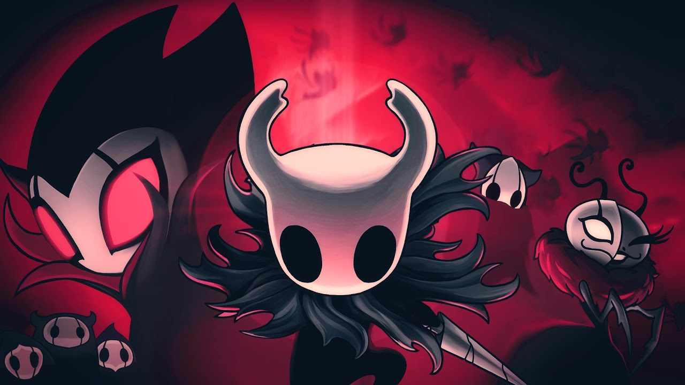
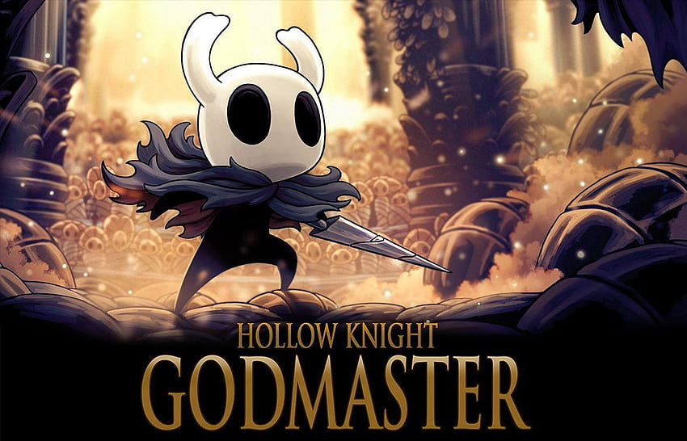

“A Troupe Grimm” é um conteúdo para download (DLC) para o jogo Hollow Knight. Foi lançado em 26 de outubro de 2017. Este DLC introduz um grupo misterioso de insetos, conhecido como a Troupe Grimm, que aparecem em Dirtmouth e pretendem realizar um ritual de fogo.
A Quest da Troupe Grimm é o pedido do Mestre da Troupe Grimm para ajudar no Ritual da Troupe em Hallownest. Tem dois finais possíveis, com diferentes recompensas, conquistas e personagens envolvidos. Os dois finais são mutuamente exclusivos. um sendo que você bane a trupe e o outro que você não bane.
Esta DLC inclui uma nova grande missão onde você pode acender a Lanterna do Pesadelo e convocar a Troupe Grimm para Hallownest. Também apresenta novas lutas contra chefes. A missão se estende por todo o reino e concede ao jogador um poderoso novo aliado.
imagem dos personagens da dlc
“Godmaster” é um conteúdo para download (DLC) para o jogo Hollow Knight. Foi lançado em 23 de agosto de 20181. Este DLC é o último dos três pacotes de conteúdo gratuitos planejados para Hollow Knight1. Inicialmente foi revelado como “Gods & Glory” junto com seu conteúdo em 31 de janeiro de 2018, mas foi renomeado para “Godmaster” em 15 de agosto de 2018 devido a um conflito de marca registrada com o jogo móvel “Gods and Glory” publicado pela Wargaming1.
Este DLC adicionou uma missão de final de jogo e desafios de luta, vários personagens e áreas secretas, mais destinatários de “Delicate Flower” e música adicional, junto com alguns remixes1. O DLC Godmaster em Hollow Knight oferece os cinco Panteões e o Hall dos Deuses - basicamente o novo e melhorado Coliseu.
Para começar o Godmaster e acessar o Godhome, o caixão que contém a entrada para o Godhome requer uma Chave Simples para desbloquear, e uma chave adicional pode ser encontrada na parte de trás do Coliseu dos Tolos1. Depois de quebrar a parede falsa (marcada por um círculo vermelho), o Cavaleiro deve encontrar e matar o Pale Lurker (marcado por uma seta vermelha) que solta a chave na morte1. Embora esta Chave Simples seja a adicional adicionada pelo pacote de conteúdo, qualquer Chave Simples funciona
Você sabia que o personagem principal de Hollow Knight foi retirado de um projeto anterior da Team Cherry chamado Hungry Knight, que foi realizado em menos de 48 horas em um encontro de desenvolvedores? Isso é um exemplo interessante de como as ideias podem evoluir e se transformar ao longo do tempo! 😊
em primeiro 1°lugar skate king com 31m 24s de LRT(load removed time)
video no qual ele alcançou 1°lugar
Caso queira ver diretamente no Youtubeclique aqui
já em 2°lugar temos lep com 31m 39s de LRT
video no qual ele alcançou 2°lugar
e por ultimo mas não menos importante temos jackmanmarcus com 31m 46s de LRT
video no qual ele alcançou 3°lugar
Caso queira ver diretamente no Youtubeclique aqui